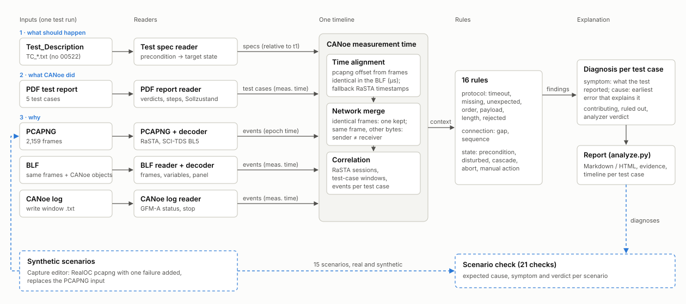

Why did a CANoe SCI-TDS test case fail? An analyzer that correlates the test description, the CANoe report and the traces, and names the root cause with evidence.
| File | Says | Time base |
|---|---|---|
| Test_Description (.txt) | what should happen: precondition, steps, 500 ms limit, bytes | relative to t1 |
| CANoe PDF report | what CANoe did: verdicts, failed step, target state | measurement time |
| PCAPNG | RaSTA and SCI-TDS telegrams on the wire | epoch |
| BLF | the same frames, plus CANoe variables, panel actions, test windows | measurement time |
| CANoe log | decoded GFM-A status, stop messages | measurement time |
The report for TC_NPRO.295.02288.01 says the precondition was not reached after 120 s. It does not say why.

16 rules. Protocol: timeout, missing, unexpected, order, payload, length, rejected. Connection: gap, sequence. State: precondition, disturbed, cascade, abort, manual action. Data: configuration, time alignment.
Detected failure: 300.288 s Precondition not reached: target 2/0 (Test_Description), actual 3/0
Root cause: 186.953 s 34W1 became disturbed 102 ms after an occupied report with Achszählfüllstand
0x0000; reset possible for 50 s but no AZG/AZGH sent
Consequence: cleanup failed → TC_NPRO.295.00525.01 started disturbed (cascade)
Also: step 2 expects a 48-byte status, the RealOC sends 47 (BL5): incorrect_length
| Test case | CANoe | Analyzer | Cause |
|---|---|---|---|
| 02283 (O) | pass | pass | – |
| 02284 (F) | pass | pass | – |
| 02288 (O) | fail | fail | GFM-A disturbed during manual occupation, never reset |
| 00525 (F-ReZE) | fail | fail | cascade from 02288; forbidden manual AZGH/AZG had no effect |
| 00522 (O-ReZE) | inconclusive | inconclusive | test unit stopped by the user |
Ruled out on the real run: connection interruption, sequence errors, payload, timing. Every claim cites a frame, page or line.
Real run: precondition, disturbed GFM-A, cascade, abort, configuration mismatch, spec length (48 vs. 47 bytes), clock offset, plus the "ruled out" checks.
Synthetic: a copy of the RealOC pcapng with one failure edited in at RaSTA level. Sequence numbers are kept; lengths and checksums are recomputed.
timeout · missing · unexpected · order · payload · length · sender ≠ receiver · connection · sequence gap · rejected · clock step
checks give the expected cause and verdict
Example: in an edited capture, a status telegram arrives 299 ms after the AZGH of 02284, which its NOT step forbids. Result: FAILED (report: passed).
.venv/bin/python analyze.py # report of the whole run → output/report.{md,html}
.venv/bin/python analyze.py --test-case 02288 # one test case
.venv/bin/python -m trace_analyzer.synthetic # the 15 scenarios
scripts/demo.sh # everything, about 15 s
Read first: README.md · IMPORTANT_TO_KNOW.md · docs/review.md (decisions to confirm, feedback)